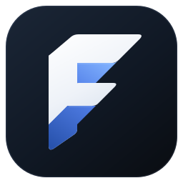
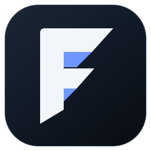
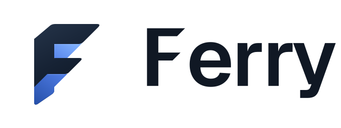

FERRY / IDENTIDADE
Fita dobrada · SVG

Uma fita em movimento.
As faces claras formam o F. As dobras azuis revelam o caminho da fita. Na abertura, um fio de luz dá lugar às peças, que se acomodam até formar a marca.

